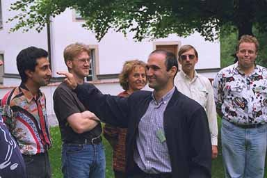

35. BODY LANGUAGE **
Research says that 70% of the overall information is taken up via your body language. The body language can either support or contradict the spoken word. During the communication process, the body language always overrides the spoken word, i.e. the use (or not use) of this non-verbal form of communication can significantly affect the whole teaching process.

Therefore, you should support the spoken word with the help of your body language. Gestures and facial expressions should be used intentionally.
You should try to look the participants in the eyes, so they feel spoken to and integrated. In addition, you as the teacher get feedback about the participants condition. You should look at everybody in turn. If you use a too detailed MANUSCRIPT, there is a big risk of not looking at the participants, because you have to read the manuscript.
You should try to balance your movement in the room between the two extremes "Pillar in the room" and "Tiger in the Cage". Hectically walking around is as negative as standing around without a move or hiding behind your desk.
You should always try to show your full front and try to display open gestures with your hands and your arms. Never sit down or otherwise hide behind the desk.
A good way for novice teachers to improve their body language is to take acting classes or improvisation classes. You can also videotape yourself and see "how you act".